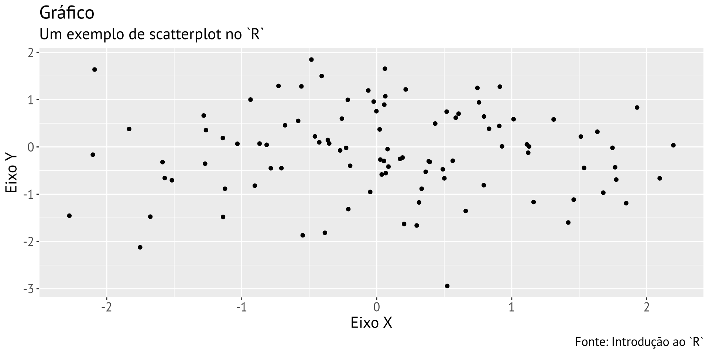
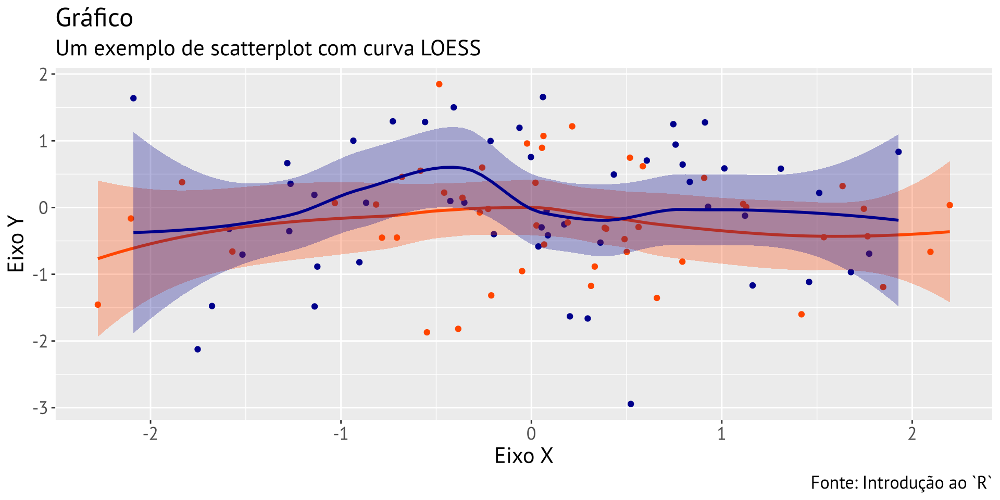
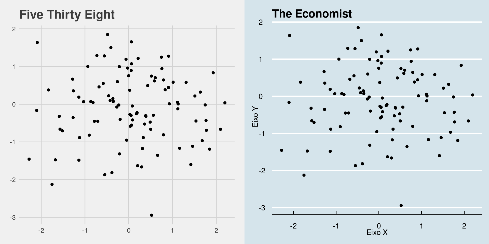
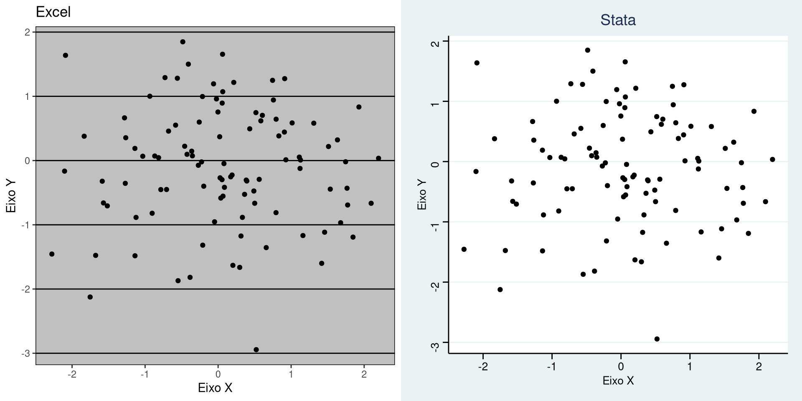

Introdução ao R
Escola de Inverno 2023
Introdução ao R: Básico
O R é uma linguagem de programação, mas também um ambiente para análise estatística:
- É um ambiente porque foi planejado com um conjunto de funcionalidades integradas e adaptáveis
- É uma linguagem de programação porque permite criar e modificar funções, além de alterar objetos
- É de alto nível porque permite operar com instruções abstratas em vez de alocar memória e representação de dados, e.g.
Introdução ao R: O que ele faz?
Por ser uma linguagem de programação, é possível fazer praticamente tudo com o R:
- Criar, modificar e usar funções
- Abrir, modificar, criar e salvar informações de inúmeros formatos
- Conectar-se à internet e interagir com APIs e outros
- Interagir com outros recursos computacionais, como outros softwares, linguagens e sistemas operacionais
Introdução ao R: O que ele faz?

Introdução ao R: O que ele faz?
Introdução ao R: O que ele faz?

Introdução ao R: O que ele faz?
Introdução ao R: O que ele faz?
Introdução ao R: O que ele faz?
Introdução ao R: O que ele faz?
Introdução ao R: O que ele faz?
Introdução ao R: O que ele faz?
Call:
lm(formula = y ~ x + z, data = df)
Residuals:
Min 1Q Median 3Q Max
-2.93845 -0.53481 0.05709 0.65081 2.04682
Coefficients:
Estimate Std. Error t value Pr(>|t|)
(Intercept) -0.197380 0.132617 -1.488 0.140
x 0.001527 0.091529 0.017 0.987
zB 0.191239 0.187086 1.022 0.309
Residual standard error: 0.9321 on 97 degrees of freedom
Multiple R-squared: 0.01071, Adjusted R-squared: -0.009692
F-statistic: 0.5248 on 2 and 97 DF, p-value: 0.5933Introdução ao R: O que ele faz?
| Estimativa | Erro-padrão | T-valor | P-valor | |
|---|---|---|---|---|
| (Constante) | -0.1974 | 0.1326 | -1.49 | 0.1399 |
| x | 0.0015 | 0.0915 | 0.02 | 0.9867 |
| zB | 0.1912 | 0.1871 | 1.02 | 0.3092 |
Introdução ao R: O que ele faz?
Introdução ao R: O que ele faz?
Introdução ao R: O que ele faz?
Introdução ao R: O que ele faz?
Até mesmo estes slides foram feitos no R.1
Introdução ao R: Academia
Na academia, o R é o segundo ambiente estatístico mais usado no mundo. Entre outros, ele permite:
- Com seus 25689 pacotes (em julho de 2023), ele fornece ferramentas para quase todo tipo análise: qualitativa, descritiva, inferencial, causal, experimentos, descoberta, simulações, estatística bayesiana, etc
- Ele também permite exportar facilmente resultados para qualquer formato: .doc, .xlx, .pdf,
LaTex,HTML, imagem, vídeo, bancos de dados, etc.
Introdução ao R: Academia
Outras vantagens é que o R:
- É gratuíto
- E envolve uma comunidade extensa de desenvolvedores
Introdução ao R: Academia
Entre outros, nas Ciências Sociais já existem diversos usos para o R:
- Pacotes que permitem acessar dezenas de bancos de dados diretamente (psData)
- Pacote que conectam a diversas API (como a de
Registro nos EUA) - Pacote que extrai textos de PDF
- Integração com Tensorflow (há várias outras)
Objetivos do curso
- Primeiro, aprenderemos o básico da sintaxe do
R
- Depois, trabalharemos com os principais verbos usados numa análise
- Por fim, praticaremos nossa capacidade de articular sintaxe e verbos para produzir análises – a nossa capacidade de falar via
R
Plano das aulas
- Aula 1 - Básico
- Aula 2 - Manipulação
- Aula 3 - Visualização
- Aula 4 - Documentos
Instruções gerais
- Não interrompam colegas
- Estendam a mão quando tiverem dúvidas, e tentem acompanhar a pessoa ao lado
- Evitem distrações: vocês podem usar Facebook ou WhatsApp outra hora
- Não tenham medo de errar – é o melhor jeito de aprender programação
Materiais
Usaremos os materiais que estão em: